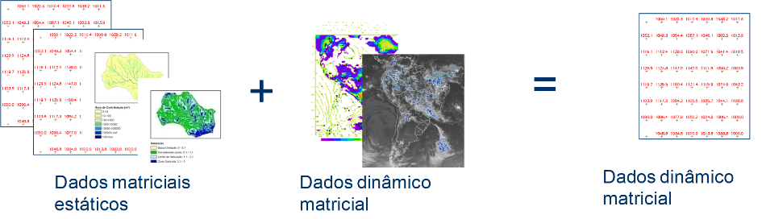

Tipos de Análises
Na TerraMA2 são três tipos de análises suportadas. A seguir uma breve descrição do tipos:
Manipulação de Análises - Adição de Análise 
-
Análises baseadas em Objetos Monitorados
 : É o principal tipo de análise utilizada. Neste tipo de análise, um dado estático vetorial (identificado como objeto monitorado), com representação geométrica de pontos, linhas ou polígonos, são sobrepostos a dados dinâmicos (grades, PCD ou ocorrências) para produzirem novos dados dinâmicos na forma de uma tabela temporal associada ao mapa de objetos. Essa nova tabela armazena a data/hora de execução da análise e os atributos resultantes dos cálculos da análise. Note que o relacionamentos entre a tabela do objeto a a resultante da análise é de 1 para muitos (1-n). O esquema apresentado na Figura 3.2 mostra que a análise requer como entrada: um mapa vetorial previamente disponível como dado estático, dados dinâmicos cadastrados e um modelo de análise escrito em Python.
: É o principal tipo de análise utilizada. Neste tipo de análise, um dado estático vetorial (identificado como objeto monitorado), com representação geométrica de pontos, linhas ou polígonos, são sobrepostos a dados dinâmicos (grades, PCD ou ocorrências) para produzirem novos dados dinâmicos na forma de uma tabela temporal associada ao mapa de objetos. Essa nova tabela armazena a data/hora de execução da análise e os atributos resultantes dos cálculos da análise. Note que o relacionamentos entre a tabela do objeto a a resultante da análise é de 1 para muitos (1-n). O esquema apresentado na Figura 3.2 mostra que a análise requer como entrada: um mapa vetorial previamente disponível como dado estático, dados dinâmicos cadastrados e um modelo de análise escrito em Python.
Figura 3.2 – Esquema de uma análise com base em objeto monitorado.
Nota: Além dos operadores zonais utilizados sobre os dados dinâmicos que serão realizados nos modelos do usuário, os atributos do dado estático também podem ser utilizados nos cálculos.
Exemplo típico, Operadores sobre obj monitorado
- Análises baseadas em grades : São análises que tem por objetivo a criação de novas matrizes dinâmicas com base na aplicação de um modelo matemático sobre dados estáticos e dinâmicos, ambos matriciais. O esquema apresentado na Figura 3.3 mostra que a análise requer como entrada; dados estáticos matriciais (não obrigatório), dados dinâmicos matriciais cadastrados (pelo menos um) e um modelo de análise escrito em Python. Como saída gera-se um novo dado dinâmico matricial. Nota-se que o dado matricial resultante pode servir como entrada para a análise com objetos monitorados.

Figura 3.3 – Esquema de uma análise com base em grades.
Nota: Pelo menos um dos dados deve ser dinâmico de modo que a saída será criada na frequência desse dado ou a intervalos fixos definido pelo usuário. Ajustes deverão ser definidos para grades com diferentes resoluções espaciais e diferentes tamanhos. Um conjunto de operadores sobre grades de observação e previsão estão disponíveis.
Exemplo típico, Operadores sobre Grades
- Análises baseadas em PCD : Neste tipo de análise, uma fonte de dados do tipo PCD fornece um conjunto de pontos a serem analisados. Para cada um destes pontos será aplicada individualmente uma regra de análise fornecida pelo usuário para definir um novo valor de atributo. O esquema apresentado na Figura 3.4 mostra que a análise requer como entrada; uma série de dados dinâmicos do tipo PCD e um modelo de análise escrito em Python. Como saída gera-se uma tabela com os resultados da análise.
Figura 3.4 – Esquema de uma análise com base em PCD.
Nota: Além dos cálculos realizados sobre os atributos da PCD (ver operadores de PCD), novos atributos podem ser incluídos como resultado do cruzamento com outros dados dinâmicos, sejam matriciais, PCDs ou ocorrências. Neste caso, as PCD´s podem ser consideradas como objetos monitorados para fazer uso dos operadores zonais disponíveis nesse tipo de análise.
Exemplo típico, Operadores sobre PCDs
Created with the Personal Edition of HelpNDoc: Free Web Help generator